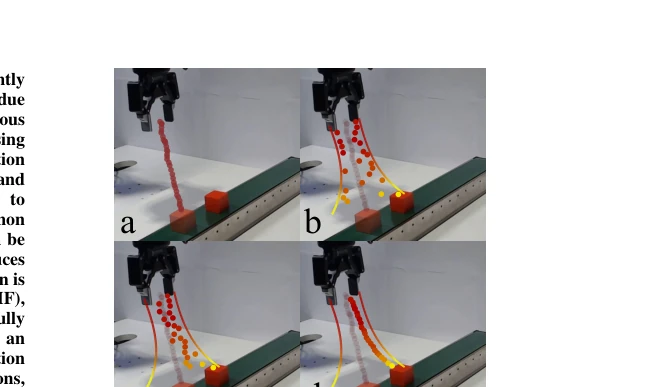
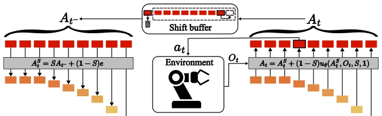
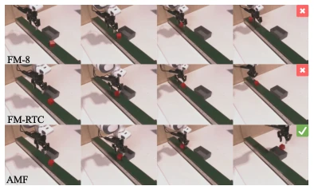

This paper attempts to solve the ultimate paradox in embodied intelligence of "wanting the horse to run (low-latency closed-loop) while also wanting the horse not to eat grass (action smoothness)." The AMF method proposed by the authors is indeed impressive, utilizing Mean Flow to achieve single-step generation, reducing inference latency from tens of milliseconds to 14 milliseconds, which is simply a lifeline in real-time control. Unlike certain "consistency policies" that require complex distillation training, it employs a clever "adaptive noise" mechanism, allowing the robot to dare to "go crazy" in the distance (high noise to adapt to the environment) while "obeying rules" up close (low noise to maintain smoothness). However, the authors honestly admit that this approach works moderately for discrete actions (such as gripper opening/closing) and is prone to "stalling", indicating that it is essentially a "specialist" tailor-made for continuous control. Although it does not solve all problems, on the track of closed-loop control for continuous actions, it indeed temporarily reconciled the "arch-enemies" of "reaction speed" and "action stability".
Diffusion models and Flow Matching perform excellently in robot imitation learning, capable of handling multimodal distributions, but their iterative denoising processes result in high inference latency, making it difficult to support high-frequency closed-loop control. To avoid latency, existing works often adopt the Action Chunking strategy, i.e., predicting and executing a sequence of actions at once [5]. However, this open-loop execution sacrifices the policy's immediate response capability to the environment; once environmental disturbances occur, the robot cannot utilize the latest state to adjust actions, leading to stiff or unstable movements [7]. Although existing research has attempted to balance consistency and responsiveness through real-time chunking [21] or bidirectional decoding [7], they often rely on additional test-time computation or complex fine-tuning, and fail to fundamentally resolve the contradiction between generation speed and closed-loop responsiveness. Furthermore, directly replacing with the faster Mean Flow [8] can accelerate, but lacking a smoothing mechanism leads to action jitter. Therefore, there is an urgent need for a closed-loop control method that can generate quickly in a single step while ensuring action smoothness and coherence through an adaptive mechanism.

Fig. 1: Trajectory generation with Adaptive Mean Flow visualized for a real-world conveyor belt picking task. a-b) Noisy points are sampled in the vicinity of the trajectory computed at the previous step. The noise increases for points along the path, corresponding to predictions farther into the future. c-d) The AMF denoising network computes a new trajectory by modifying the noisy sequence.
The core of AMF lies in combining the "single-step generation" capability of Mean Flow [8] with the "adaptive noise perturbation" strategy. The overall process is as follows: in the inference phase, the model no longer starts from pure Gaussian noise, but uses the "predicted action sequence from the previous step" as an anchor, applies varying degrees of noise pollution to it to generate an initial trajectory, and then directly predicts the final action sequence through the Mean Flow network. Specific innovations include: 1. Single-step generation acceleration: Utilizing the constant flow property of Mean Flow, requiring no multi-step integration, directly generating high-quality action sequences through a single forward pass, greatly reducing latency. 2. Adaptive noise scheduling: This is the soul of AMF. It does not adopt a globally uniform noise level, but dynamically adjusts according to time steps. For current and recent actions (close to the past), low noise (high signal-to-noise ratio) is applied, forcing the prediction result to closely fit the previous step trajectory, ensuring smoothness; For distant actions, high noise is applied, granting the model the freedom to adjust future paths based on new observations, improving responsiveness. 3. Dynamic initialization: The noise coefficient sequence is defined via Equation (12), causing noise to monotonically increase along the prediction time axis. 4. Training strategy: During training, "independent sampling" and "monotonically increasing" noise intervals are mixed, enabling the model to generalize to the dynamic noise distribution during inference. 5. Condition injection: The F-AdaLN-Z mechanism is adopted to embed time step information into the Transformer, achieving finer-grained control.

Fig. 2: AMF inference. From the left: The previous action sequence prediction At−is corrupted with Gaussian noise according to Eq. 12, producing AS t . Actions further in the future are more uncertain and, therefore, more corrupted. The Mean Flow network uθ(·) predicts the next action sequence At, using AS t and the most recent observation sequence Ot. The action at corresponds to the current time-step sent to the robot for execution, and At is shifted (Eq. 9) and reused as At−for the next control step.
The authors conducted extensive evaluations in simulation environments such as MetaWorld, Push-T, Dynamic Block Pushing (Dyn-BP), and D3IL, as well as real-world Push-T, Box-close, and conveyor belt grasping tasks. Baselines include Flow Matching (FM), Mean Flow (MF), Streaming Diffusion Policy (SDP), and Consistency Policy (CP), etc. Results show that AMF's average success rate in simulation tasks is 6% higher than the best baseline AFM, and it exhibits extremely strong robustness under dynamic perturbations. In the real world, AMF's inference latency is only 14ms (far lower than FM-8's 54ms), significantly outperforming other methods, and achieving a higher success rate than baselines in conveyor belt grasping tasks. Ablation studies indicate that F-AdaLN-Z condition injection and mixed noise training strategies are crucial for performance improvement. However, experiments also exposed limitations: in tasks involving discrete actions (such as gripper opening/closing), AMF performs poorly, prone to situations where it fails to release or grasp correctly, confirming the method's preference for continuous action modalities.
其他图片Other Figures

Fig. 7: Rollout comparison on real-world conveyor belt task, with the maximum belt speed of 15.3 cm/s. Top: FM-8 initially misjudges the trajectory needed to intercept the block, and is unable to recover, eventually ending up behind the object and failing the task. Middle: FM with real-time chunking adjusts more aggressively, but closes the gripper prematurely and misses the object. Bottom: AMF tracks slightly behind initially, but performs the necessary adjustments to catch up and successfully grasp the block.